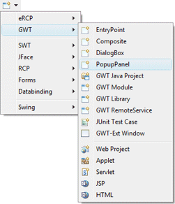
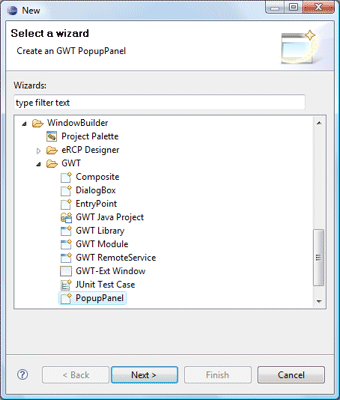
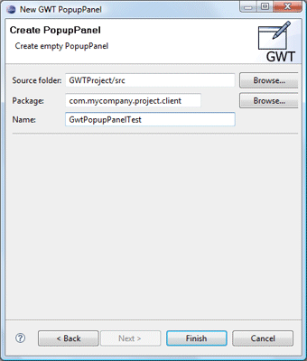

|
Subclasses of the GWT PopupPanel class can be
created using the GWT PopupPanel wizard. The wizard can be
selected from the drop down wizard menu or from the
Eclipse New wizard.
To use the wizard, select the project source folder and package to contain the class. Then enter the class name and hit the Finish button. |
|
  |
|
com.google.gwt.user.client.ui.PopupPanel; public class GwtPopupPanelTest extends PopupPanel { public GwtPopupPanelTest() { super(true); } } When editing GWT PopupPanels, all of the standard GWT panels, widgets and menus are available. Custom or third party controls may be added via the Choose Component command. |